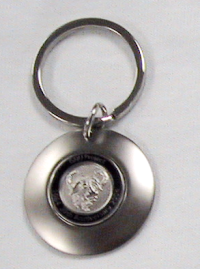

Some images of historic GNU press items. While many of these are still available, others are not.
For a complete up to date list of the items available from the Free Software Foundation, please see the FSF's online store.


If you have any other historical GNU press items, I would love to see them. Please send high-resolution images, or if you no longer want them and would be happy to donate them to the FSF, please send me an email, mattl@fsf.org.